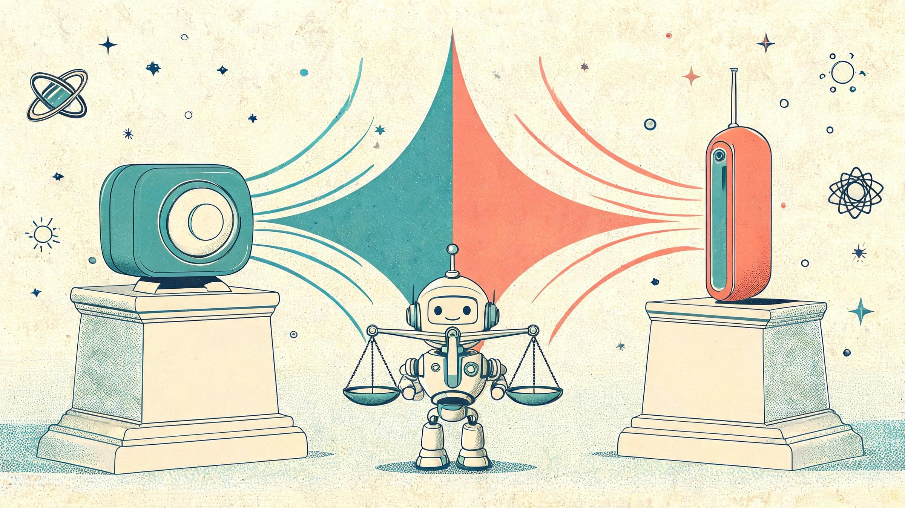
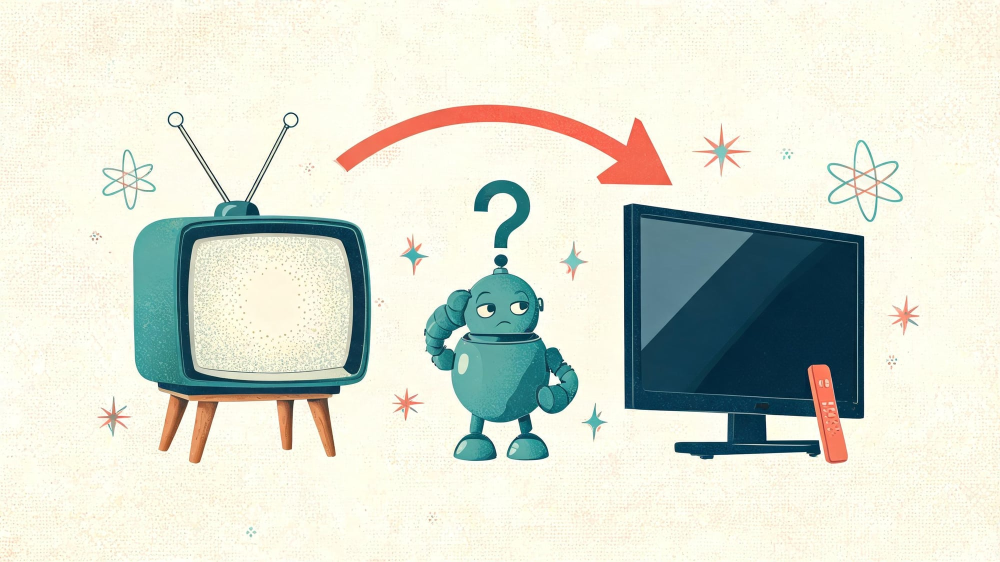
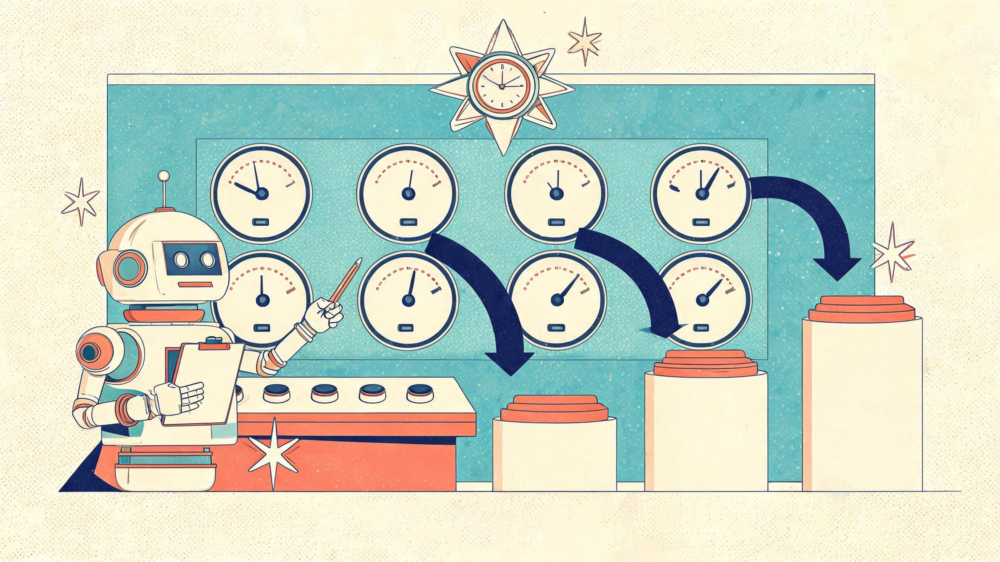
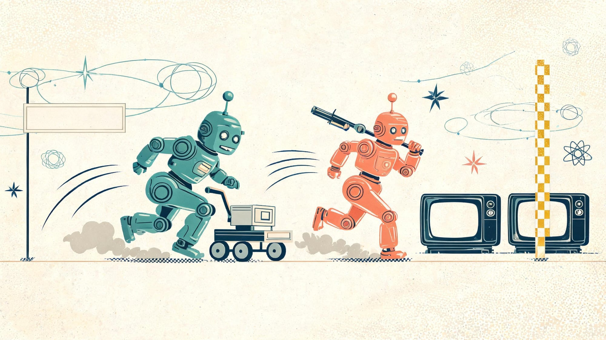
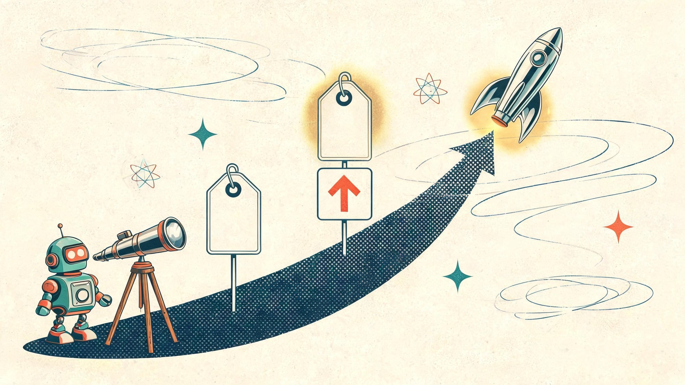
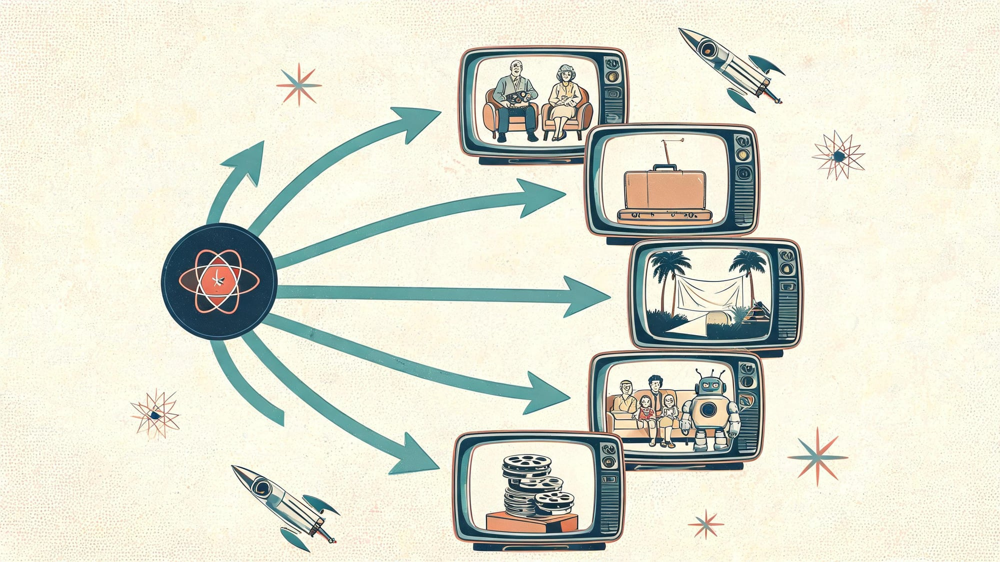

Roku vs Fire Stick (2026): Which Streaming Device Actually Wins?

There is no universal winner between Roku and Fire Stick - and any guide that claims otherwise is selling you something. Roku wins on price, setup simplicity, interface neutrality, and update longevity; Fire Stick wins for Alexa smart homes, Prime Video households, voice depth, and side-loading. This guide scores every category, names the current 2026 models and prices (including August's Fire price hike), and picks a winner for your specific use case.
🔄 Last updated October 20, 2026: reflects the August 2026 Fire TV Stick price increase (HD $39.99, 4K Select $49.99, 4K Plus $69.99, 4K Max $84.99), the current lineup (Fire TV Stick 4K Max, Roku Streaming Stick Plus), and October comparison coverage. Prices re-verified at publication; next price-check at Black Friday.
Quick answer
Most people should buy the Roku Streaming Stick Plus (~$39.99) - after Amazon's August 2026 hike, the Fire TV Stick 4K Max retails at ~$84.99 (was $59.99), so Roku undercuts it by $45 - and Roku is also faster to set up and interface-neutral. Choose Fire Stick instead if: you have an Alexa smart home, you watch Prime Video daily, or you side-load apps - and watch for sales, which pulled the 4K Max to $44.99 in early October. The full scorecard below shows every category winner so you can weight what matters to your household.
In this guide
Same or Different? (Roku TV vs Fire TV vs Sticks)
First, the confusion that Google's autocomplete suggests thousands of people have: Roku and Fire Stick are not the same thing, and the naming makes it worse. Here is the map in one view:

| Name you'll see | What it actually is |
|---|---|
| Roku / Roku stick / Roku player | A streaming device running Roku OS, made by Roku Inc. |
| Roku TV | A smart TV with Roku OS built in (TCL, Hisense, Onn make them) |
| Fire Stick / Fire TV Stick | A streaming stick running Amazon's Fire OS |
| Fire TV (or Fire TV Edition) | Amazon's platform - either a stick or built into certain TVs |
| "Roku vs Fire TV" | Same comparison as Roku vs Fire Stick - Fire TV is the platform name |
The practical difference between "Roku vs Fire Stick" and "Roku vs Fire TV" is zero - Fire TV is simply Amazon's platform name, and its stick is the Fire TV Stick. If your TV already says "Roku TV" or "Fire TV Edition" on it, that platform is built in and a stick is optional. For everyone else, the comparison below is the real decision.
Category Scorecards: Every Category, Every Winner
The streaming wars are not one fight - they are ten. Here is every category scored honestly, including the rounds where the device you like loses:

| Category | Winner | Why |
|---|---|---|
| Price (post-Aug-2026) | Roku | Streaming Stick Plus ~$39.99 vs Fire 4K Max ~$84.99 retail (was $59.99) - a $45 gap after the August hike |
| Setup speed | Roku | Minimal screens, no upsell maze - October 2026 comparisons agree it is the fastest out-of-box |
| Interface neutrality | Roku | Apps-first grid; Fire's home screen leads with Amazon content and ads |
| Voice & smart home | Fire Stick | Alexa built-in, deep Amazon smart-home routines, matter support |
| Prime Video household | Fire Stick | Native-first Prime experience, Prime-content home-screen integration |
| Side-loading / power users | Fire Stick | Android-base + developer options; Roku actively blocks non-store installs |
| Update longevity | Roku | Roku OS updates land on decade-old hardware; Fire drops older sticks sooner |
| Free TV out-of-box | Roku | The Roku Channel + 400+ free live channels front-and-center |
| Performance ceiling | Fire Stick | 4K Max is the fastest Fire stick in raw specs (Wi-Fi 6E, CPU) - at a premium price |
| Private listening | Roku | Headphone-mode in the mobile app works on more devices |
Count it: Roku takes six categories, Fire takes four. But raw counts mislead - a Prime-Video household weights category five daily while caring about price once. That is why the use-case section below matters more than the scoreboard.

Current Models Compared (2026 Lineup & Prices)

| Model (2026 lineup) | Street price | Who it's for |
|---|---|---|
| Roku Streaming Stick Plus | ~$39.99 | Most people - 4K HDR, neutral UI, best value |
| Roku Ultra | ~$69-99 | Home-theater: Ethernet, lost-remote finder, top speed |
| Roku Express | ~$29.99 | Secondary/older TVs, 1080p only |
| Fire TV Stick 4K Max | ~$84.99 retail (hiked from $59.99; sales ~$44.99) | Alexa homes, Prime-first, fastest Fire specs |
| Fire TV Stick 4K Plus | ~$69.99 (hiked from $49.99) | Mid-tier 4K - now overlaps Roku Ultra pricing |
| Fire TV Stick 4K Select | ~$49.99 (hiked from $39.99) | Entry 4K - raised 25% in the hike |
| Fire TV Stick HD | ~$39.99 (hiked from $34.99) | Budget 1080p, but reports of lag on older units |
Three pricing notes that changed in 2026: Amazon's August 21 hike raised every Fire TV Stick - the HD went $34.99 to $39.99 (+14%), the 4K Select $39.99 to $49.99 (+25%), the 4K Plus $49.99 to $69.99 (+40%), and the flagship 4K Max $59.99 to $84.99 (+42%, a $25 jump). That erased Fire's usual price advantage: Roku's Streaming Stick Plus now undercuts the 4K Max by $45 at retail. Amazon's discount pattern still closes the gap - the 4K Max hit $44.99 in early October - so patient Fire buyers should wait for sales, while Roku's is the stable everyday price. Verify today's prices before you buy; both vendors run frequent promos.
Best Pick by Use-Case
The scoreboard settles arguments; this section settles purchases. Find your household:

| Your situation | Pick | Reason |
|---|---|---|
| Buying for elderly parents | Roku | Simplest menu, no ad-maze, remote with fewer buttons; hardest-to-break interface |
| Travel / hotel TVs | Fire Stick | Smaller stick, hotel-and-travel Wi-Fi flows in Fire OS are more mature |
| Projector setup | Fire Stick 4K Max | Wi-Fi 6E headroom + HDMI-CEC behavior more forgiving on projectors |
| Plex / local media | Fire Stick | Side-load flexibility + direct-play support; Roku gates non-store servers |
| YouTube TV / live TV | Either | Both run it well; Roku's antenna-integration (Live TV channel) is tidier |
| Kids' TV | Roku | Profile pins + simpler content boundaries; Fire Kids+ exists but adds subscription |
| AirPlay to the TV | Roku | Select Roku models support AirPlay 2 + HomeKit; Fire relies on Miracast |
The 3-Way Question: Apple TV & Chromecast
Autocomplete says plenty of you are really asking about three-horse races. The short version: Apple TV 4K (~$129) is the premium pick - fastest interface, best ecosystem tie-in for iPhone households, no ads in UI - but it costs 3x a Roku for the same apps. Google TV / Chromecast sits between the two: better recommendations than Roku, more neutral than Fire, but fewer updates on cheap models. The 2026 "best streaming sticks" conversations now include Xiaomi's Mi Stick 4K as the value-wildcard, but its update record is the weakest of the bunch. For most households the fight is still Roku vs Fire - the other two are ecosystem taxes or compromises.
What Real Users Say
Community consensus mirrors the scorecards with one addition: longevity. Long-term Reddit threads (r/cordcutters' "I tried both" experiments are a recurring genre) consistently report Roku devices still receiving updates years past Fire hardware's comfortable retirement - and consistently complain about Fire's home-screen ads even while praising its Alexa convenience. The honest counter-view gaining ground in 2026: if you own a PS5 or Xbox Series X, their built-in streaming apps may already cover you - several reviewers now suggest trying your console before buying any stick.
FAQs
Is Roku and Fire Stick the same thing?
No - they are competing platforms from different companies. Roku devices run Roku OS (Roku's own streaming platform), while Fire Stick runs Fire OS (Amazon's Android-based platform). They do the same core job - streaming apps on your TV - but with different interfaces, app stores, voice assistants, and pricing ecosystems. Confusing them is common because both are small streaming sticks that plug into the same HDMI port.
What are the downsides of a Fire Stick?
The main downsides: the home screen is ad-heavy with Amazon content promoted first, it pushes Prime Video and Amazon upsells throughout the interface, older Fire TV Stick HD models have reported lag, and Alexa voice search defaults toward Amazon content. Storage is also tight on base models, and sideloading non-Amazon apps takes more steps than Android TV boxes.
What are the downsides of Roku TV?
Roku's downsides: no native way to side-load apps outside its official channel store, fewer smart-home integrations than Amazon's ecosystem, the interface now shows some ads on the home screen, voice search is more basic than Alexa, and top-end Roku hardware historically launches later than Fire's flagship sticks. Its strength is simplicity - which power users can find limiting.
Is there a monthly fee for Fire Stick?
No - there is no monthly fee for the device itself. You pay once for the hardware, and then the streaming services you choose (Netflix, Prime Video, Disney Plus, and so on) bill separately. Free ad-supported channels and apps also work without any subscription. What people sometimes mistake for a device fee is their streaming-service subscriptions.
Do smart TVs need Roku or Fire Stick?
Not always - most smart TVs already include a built-in platform (Roku TV, Fire TV, Google TV, Tizen, webOS). Adding a stick makes sense when your TV's built-in apps are slow, outdated, or missing services, or when you want one interface across multiple TVs. If you own a Roku TV or Fire TV Edition television, the platform is already built in and a stick is optional.
Roku Ultra vs Fire TV Stick 4K Max - which is better?
The Ultra wins on pure home-theater features: Ethernet port, more storage, lost-remote finder, and Wi-Fi 6 on newer models. The 4K Max wins on price-to-performance and deeper Alexa smart-home ties. If you want a set-top box for a main living room TV, the Ultra justifies its premium; for a bedroom or travel stick, the 4K Max is the better value.
Which is better in 2026, Roku or Fire Stick?
There is no universal winner - the honest answer depends on your household. Roku wins for price (post-August-2026 Fire price hike), setup simplicity, neutral interface, and longevity of updates. Fire Stick wins for Alexa smart homes, Prime Video households, voice search depth, and side-loading ability. Our scorecards above break down each category so you can weight what matters to you.
How can I get free TV on Roku or Fire Stick?
Both platforms offer substantial free content: Roku Channel (thousands of free movies plus 400+ live channels), Amazon Freevee, Tubi, Pluto TV, Plex, and YouTube's free movie catalog all work without subscriptions. Roku is generally the stronger free-TV pick because The Roku Channel is front-and-center and Roku devices advertise 400+ free live channels out of the box.
Sources
Sources & References
- PCMag - Fire TV Stick 4K vs Streaming Stick Plus MSRP comparison (May 2025)
- Decider - Roku vs Fire TV Stick review with launch pricing ($29.99 / $39.98)
- TROYPOINT - Roku vs Firestick (Jan 2, 2026 - side-loading angle)
- What Hi-Fi? - Amazon Fire TV vs Roku (voice/Prime advantages)
- Reddit r/cordcutters - "I tried both" long-term user experiment
- Reddit r/cordcutters - overall best device community thread
- Fortune - Amazon quietly hiked prices on Echo, Fire TV, Kindle, eero (Aug 21, 2026)
- AFTVnews - full Fire TV price-increase breakdown by model (Aug 24, 2026)
- Pocket-lint - every Fire Stick price rise listed, +$5 to +$25
- Roku - current player lineup and specifications (official)
- Amazon - Fire TV Stick current lineup and pricing (official)
- Tom's Guide - Roku vs Amazon Fire TV Stick news coverage
Keep exploring Veritya Daily: the phone-version of this fight in Android vs iPhone scorecards, audio upgrade picks in best noise-cancelling earbuds, and Samsung's latest in the Galaxy Z Fold 8 preorders report.